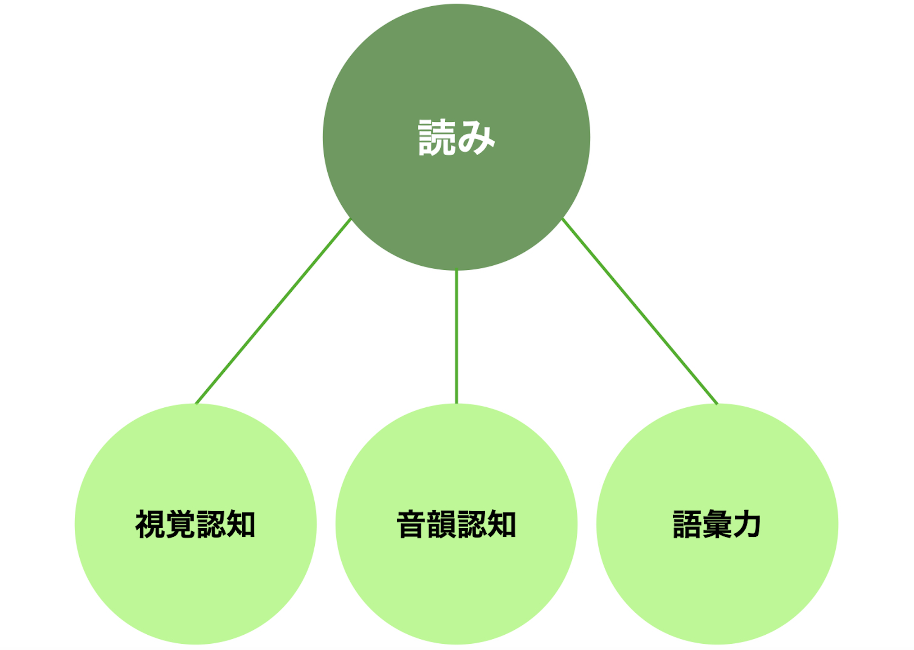
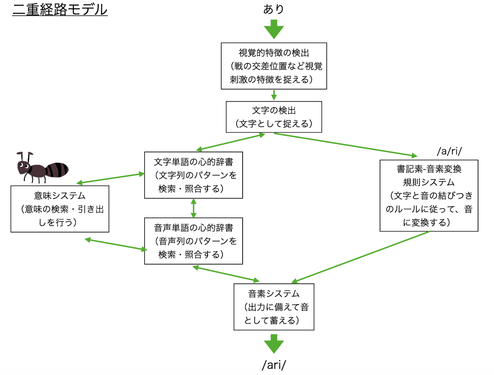
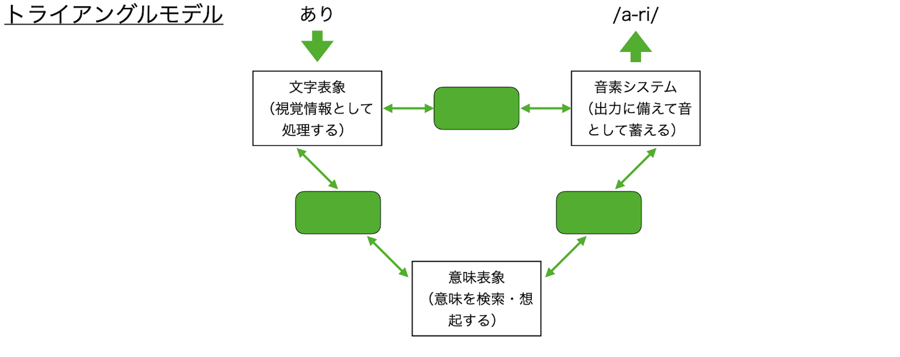

LDの心理
心理研究では、読み書きの基礎となる認知機能に着目することが多いです。理由は、読み書きは単独の認知機能ではなく、短期記憶や視覚認知、聴覚認知などのさまざまな基礎的な認知機能に支えられて獲得される高次の認知機能であるからです。
認知
「認知」という言葉の一般的な意味は、「事象について知ること、ないし知識をもつこと」（『広辞苑』）ですが、心理学の専門用語としての「認知」は、「見たり聞いたり、覚えたり、考えたりといった人間の脳内で働く総合的な知的活動」を指します。
認知は、ひとかたまりのものではなく、さまざまな側面をもっています。認知能力のさまざまな側面を測定するために、いろいろな心理検査が使われています。子どもの認知能力の測定のために使われる検査として、知能を測定するWISCや認知能力を測定するKABCなどがあります。
聴覚優位と視覚優位
認知能力にはさまざまな側面があります。私たちは外界からさまざまな情報を受け取り（入力）、それを処理しています。情報を受け取る方法として、「見ること」「聞くこと」は大きな役割を果たしています。「見ること」は「視覚情報処理」、「聞くこと」は「聴覚情報処理」といいます。通常は、視覚情報処理と聴覚情報処理はバランスよく行われていますが、どちらかが極端に弱いと日常生活に困難が生じることになります。強いほう（使いやすいほう）を指して、「視覚優位（見るほうが強い）」「聴覚優位（聞くほうが強い）」という言い方をします。
読む（書く）能力のメカニズム
一部のアナウンサーや声優を除けば、読みの最終目的は書かれていることの理解、すなわち読解です。読解を最終目的としたとき、それに至る過程は次のように三つに分類されます（参考文献）。
- 文字・単語の処理
- 文の処理
- 談話の処理
文字・単語の処理について、処理そのものが、さらに細かい複数の過程から構成されています。文字・単語の読み書きのモデルには代表的な二つのものがあります。一つは、二重経路モデル（二重経路カスケードモデル）（参考文献）であり、もう一つがトライアングルモデル（コネクショニストモデル）（参考文献; 参考文献）です。下の図は、それぞれのモデルで、「あり」という単語の読みを行った例を示しています。

二重モデルは、文字・単語の音声化までに二つに分岐する経路を想定します。一つは図の右側の書記素-音素変換のルールに従う経路です。たとえば、「してぼう」という単語を音読するとき、大半の人は"si/te/bo/u"と一文字ずつ音に変換すると思われます。このように新規ば文字列や、読みなれない非単語を読む際には、既存の語彙に適応できないため、逐次読みにならざるを得ず、こちらの経路を利用することになります。もう一つの経路は図の左側の語彙ルートと呼ばれるもので、個人内の既存の語彙を利用して、音読するものです。今度は、「さかな」という単語を音読してみると、先ほどとは異なり、"/sa ka na/"とまとめて変換したと思われます。つまり、既知の文字列のパターンから語彙が想起された結果、いわゆる「まとまり読み」が可能となりました。
これらの一方で、トライアングルモデルは、二重経路のように二者択一の処理ではなく、入力された際に上記の処理が並列して行われることを想定します。ある単語が提示された際に、どちらか一方の経路が停止するのではなく、それぞれの処理の重み付けが変動するネットワークを念頭においたモデルになっています。
ひとくちに「読むことが苦手」といっても、どこで躓いているかで、いろいろなタイプがあるのです。一音ずつたどたどしく読む「拾い読み」の子どもは、文字の形をとらえたり、文字と音を対応させたりする「書記素-音素変換のルールに従う経路」がうまく機能していないのかもしれません。音読は上手にできるのに内容が読み取れない子どもは、「語彙ルート」やワーキングメモリに問題があるかもしれません。読み飛ばしや勝手読みが多かったりする子どもは、視覚認知や眼球運動、注意などに問題がある可能性があります。また、処理速度に問題がある場合も、流暢に読めなくなります。
音韻意識
音韻意識とは、語の音の構造や、語を構成する個々の構成音についての知識、そして構成音を操作できる能力です（参考文献）。イメージしやすいように例をあげると、例えば「桜」という言葉をきいたときに、3つの音（さ・く・ら）から構成されていることに気づくことや、真ん中の音が「く」であると理解することです。音韻認識は、言語によって対象となる構成音や必要となる知識が異なるものの、いずれの言語圏でも育まれるものです。
音韻意識の弱い子どもは、語に含まれる音のイメージ（音韻表象）をとらえること、保持することが苦手です。そのため、音の構造の把握や、構成音の分解に困難が生じます。たとえば、ある子どもに「桜」と言いながら、一音一拍で手を叩くことを求めたところ、二拍しか叩けず、音の分解が正しくできないような例があげられます。
"音"を扱うことの苦手さは、音と文字との対応関係の学習に影響を及ぼします。私たちは、生まれてから文字の習得前までに、会話や聴取を通して大量の音韻表象を蓄積します。そして成長して文字に触れるようになると、今までに蓄積された音韻表象を、目の前の文字（視覚刺激）に、"乗せる"作業を繰り返すことになります。これを文字と音との対応づけ学習（マッピング）といいます。たとえば、保護者が子どもに向かって、「これは/ka/だよ」と話しかけながら、"か"を指す場面などが該当します。その後、文字と音との対応関係が習得されるにつれ、「か」という文字を見た際に、自分一人で/ka/と解読（デコーディング）できるようになります。これが、文字と音と対応関係を元にした読みの獲得です。
音韻意識が弱いと、蓄積された音韻表象が少なく不安定であるため、対応付け学習が阻害されやすいです。文字を目の前にしても、"乗せる"音韻表象が存在しなかったり、"乗せる"音韻表象が毎回変わることもあります。そのため、「これは何と読みますか」と"か"を指されても、「あれ？"な"だったかな、"か"だったかな」と、混乱してしまいます。つまり、読むことに時間がかかり（流暢性の障害）、読み誤りも生じやすい（正確性の障害）のです。このように日本語だけでなく、多くの言語においても、音韻意識が読み書き障害の主原因であると考えられています。
視覚認知機能
視覚認知機能とは、絵や文字、図形等の視覚情報について把握・分解・統合などを行う総合的な能力です。たとえば、「木」という漢字を見たときに、どこで線が交わっているか、またどのようなパーツから構成されているか、などを認識する力とも言い換えられます。基礎的な心理学研究全般でも最も取り組まれている部分であり、読み書き障害ではその弱さが原因の一つにもあげられます。
字形や文字列パターンを捉える際には、視覚認知機能が強く関与します。すなわち、視覚認知機能が脆弱であると、これらを捉えることに誤りが生じたり、時間を要することがあります。その結果として、音への変換において正確性や流暢性が阻害されます。また視覚性記憶の弱さが読み書きを阻害する場合もあります。漢字の字形や特定の文字列について、視覚的イメージとしての保持が弱いために、文章を読んでいる際に表れた文字と、心的な視覚的イメージの照合に困難を生じることがあります。照合の困難さは、読み誤りや音を想起するまでの時間遅延につながり、正確性や流暢性が阻害されることにつながります。
視覚認知機能に弱さのある子どもでは、文字の崩れがしばしば見受けられます。研究からも示されるように、斜め線の乱れは大きく、線と線が重なる部分にも誤りが多い。こうした苦手さは漢字の書字で顕著となります。また、文字だけでなく、理科や生活科での観察図の作成が苦手であったり、図画工作で立体的な説明書を読むことにつまずくこともあります。
視覚認知機能は運動機能にも影響を及ぼしやすいです。上で述べたような書字や描写のみならず、家庭科での細かい作業に困難を感じる子どもも多いです。視覚認知が弱いだけでなく、目と手を協応させることの苦手さが影響するためです。また、階段で転びやすい・縄跳びが苦手であるなど、文字とはかけ離れた粗大運動で困難さがあらわれることも見受けられます。
書く能力のメカニズム
書くことになると、さらに運動の問題や頭の中で内容を組み立てることなど、複雑な要素が加わります。読むことと同様、書くことが苦手といっても、さまざまなタイプがあります。